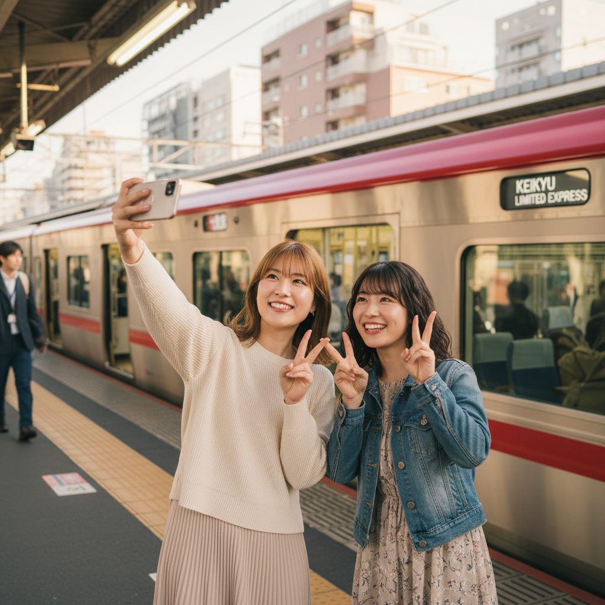
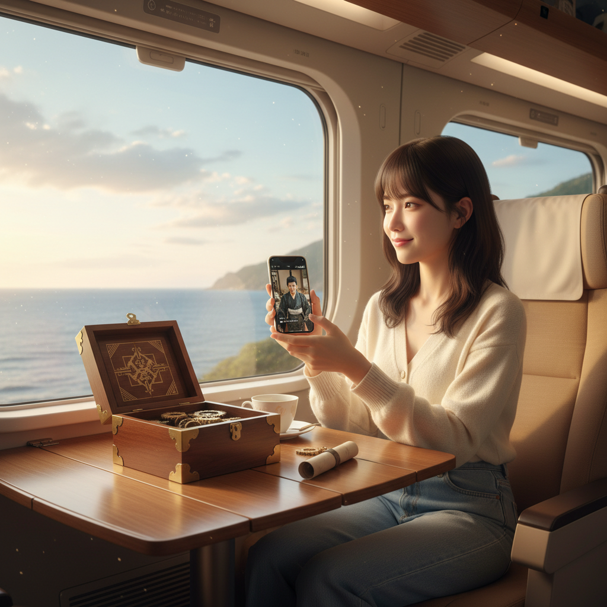
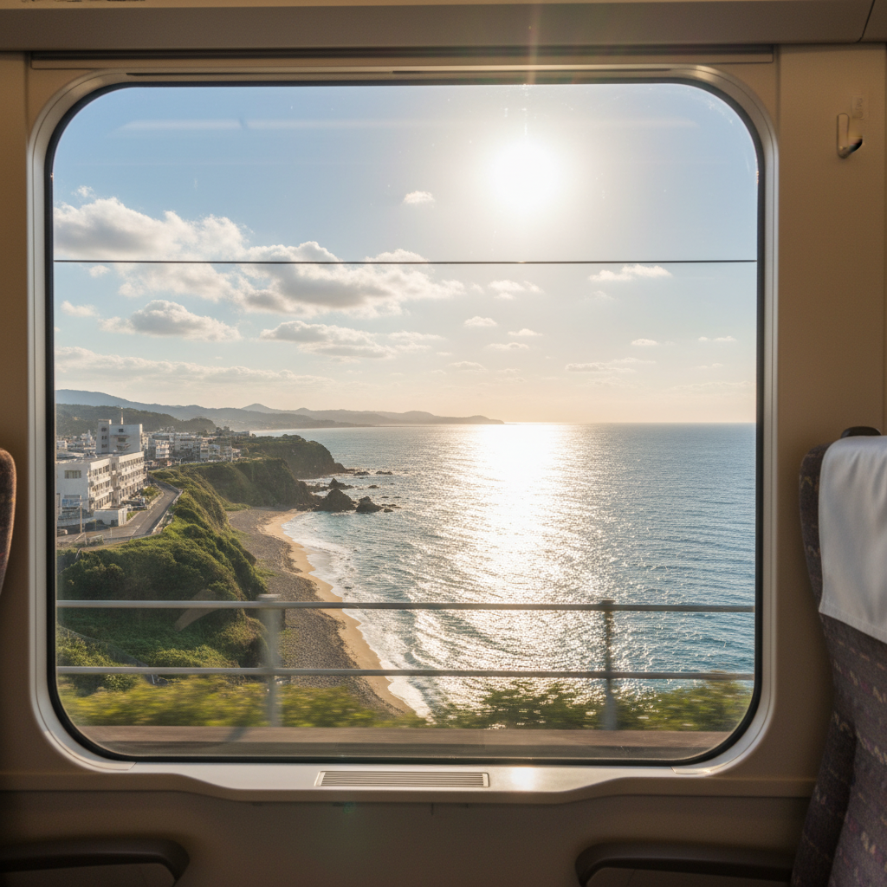
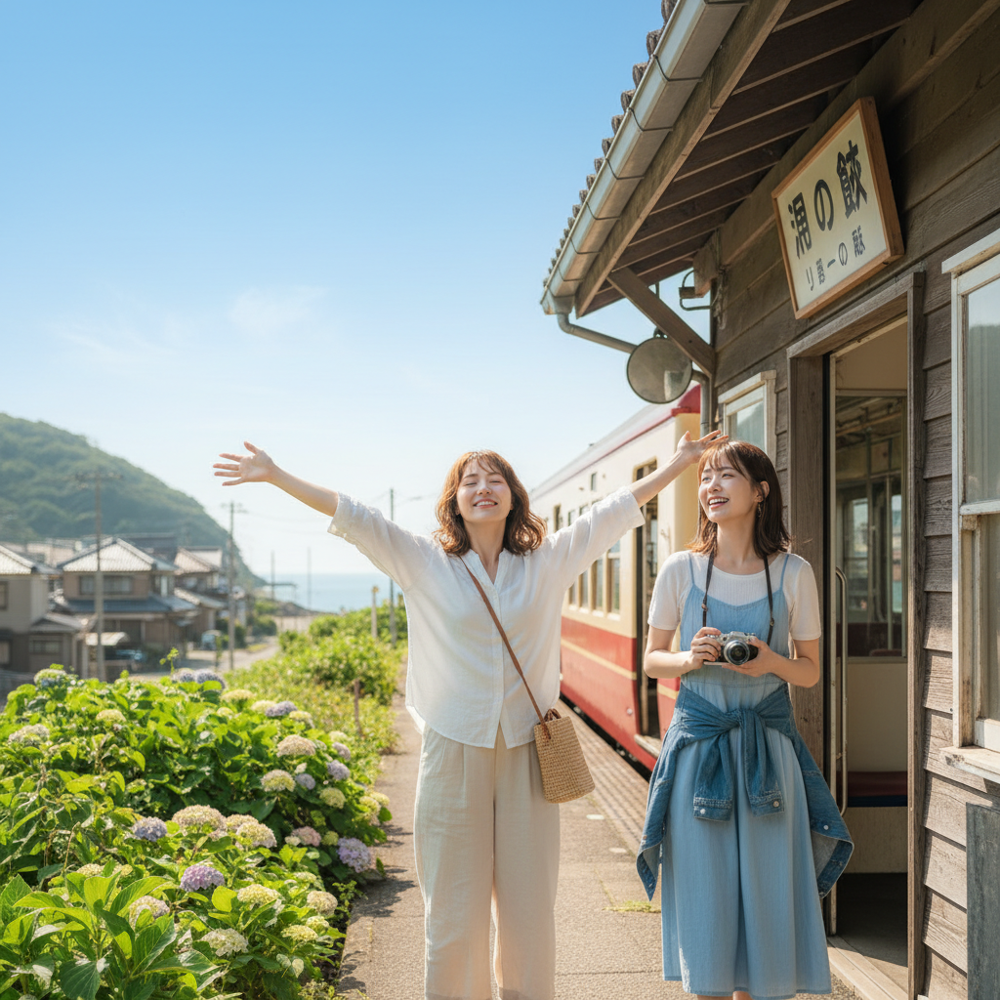
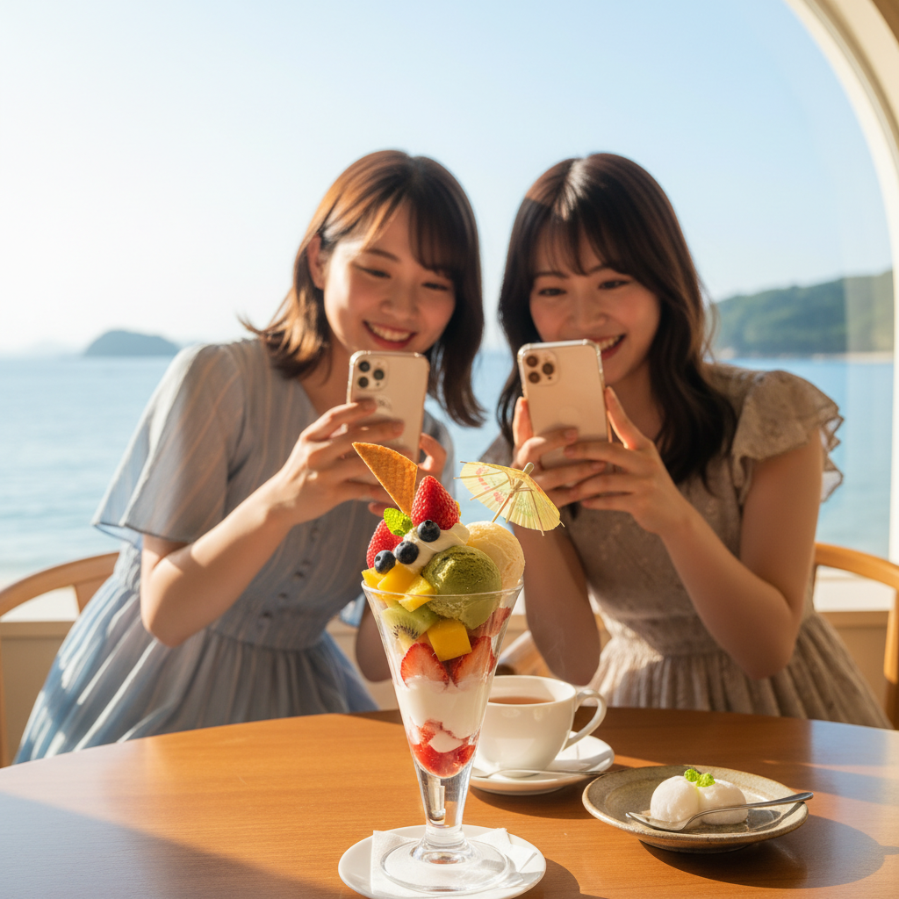
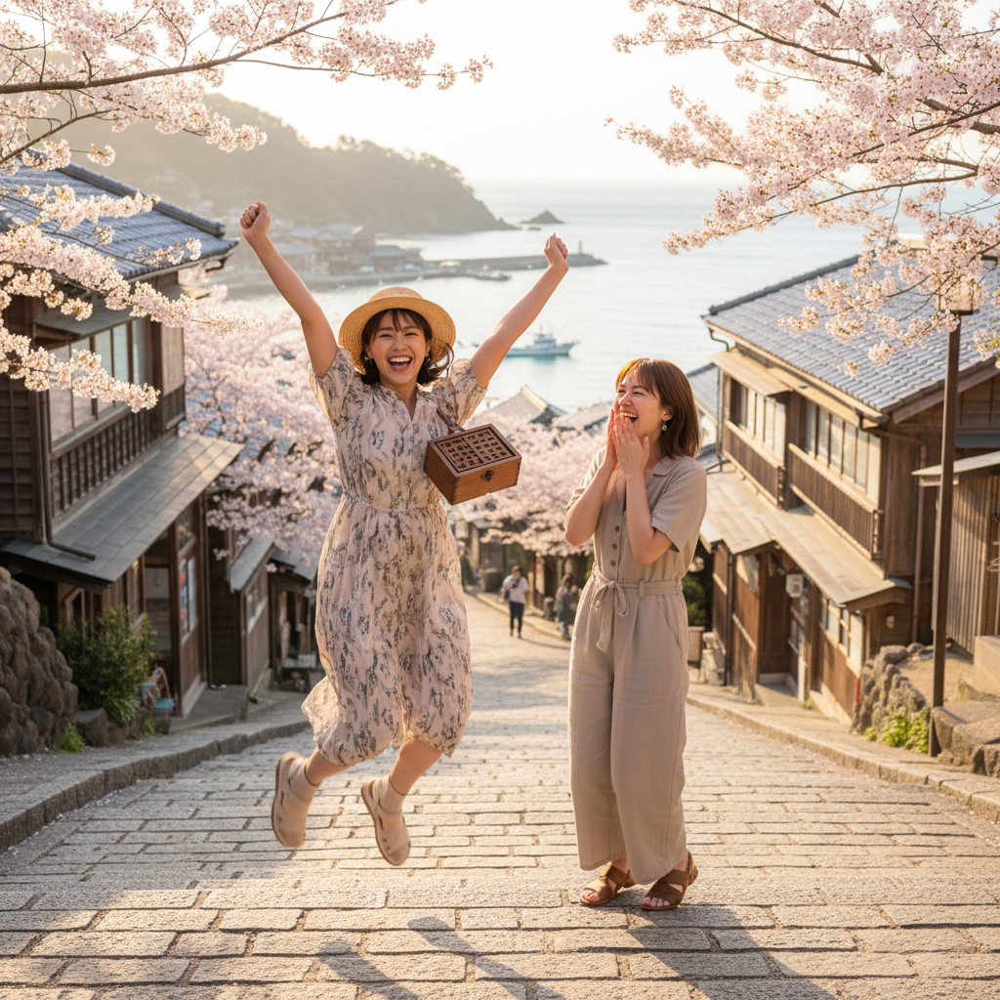
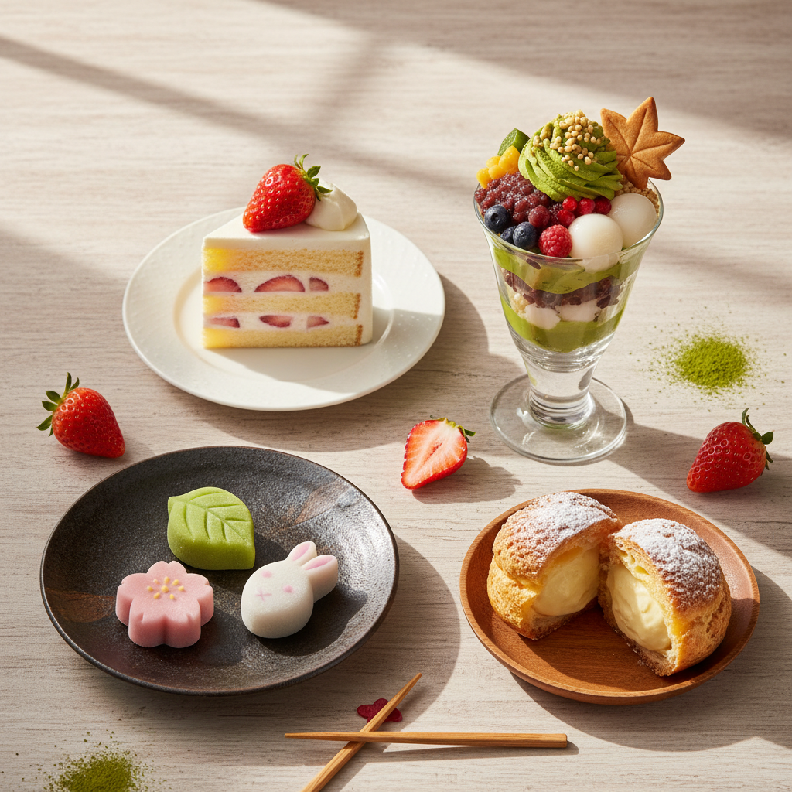
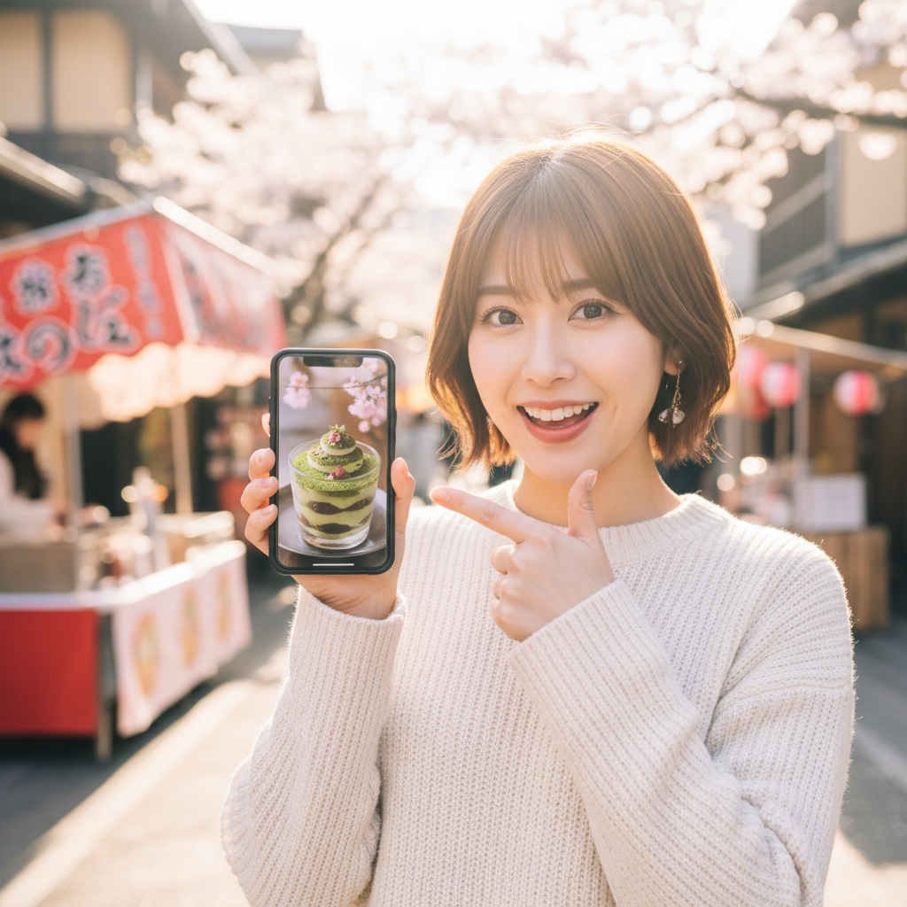
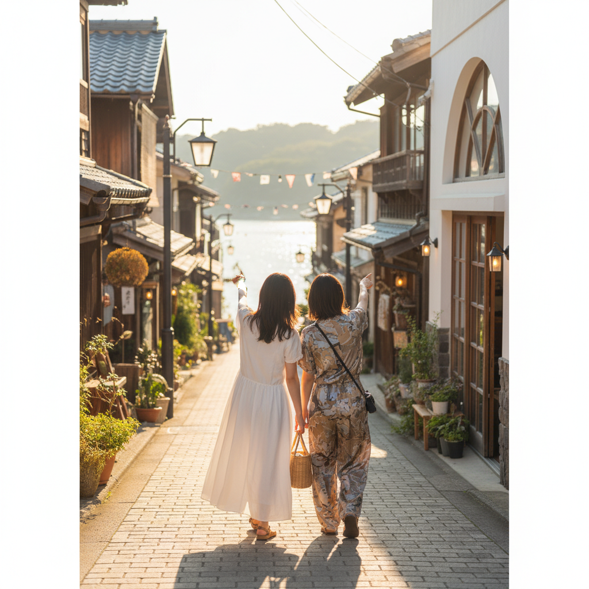

NEW CONCEPT v2.0 — 2026-04-15 MTGアップデート
🍰 東京発！特急でいく！
謎解きスイーツ巡り旅♬
セツナトレイン × 伊東お菓子共和国 | スイーツ好き女子2名向け | 5-6月日帰りターゲット
2026-04-15 MTG後更新 | 一進AI Creative Team | 撮影：金曜日（伊東ロケ）
🏰 伊東お菓子共和国ストーリー（謎解きの核心）
ストーリー概要（MTGで確認）：
伊東市は「伊東お菓子共和国」として、市全体でお菓子・スイーツを推進している。
この謎解きでは、「お菓子共和国のお菓子屋さんを貶める偽情報記事を書く謎の団体」を阻止するミッションが課される。
街を歩きながら手がかりを集め、偽情報記事を削除させることでお菓子屋さんを救う。
エンディング：なぎさ公園で夕日を見ながらミッション完了。
📍 伊東ルートマップ（撮影スポット確定版）
→
→
→
🍓
フルーツパレス
とみた
駅前 / 映えスポット#1
→
→
→
→
🍦
スイートハウス
若ば
レトロ喫茶 / 特殊ソフトクリーム
→
→
🌅
なぎさ公園
ゴール / 夕日 / ミッション完了
🎬 主要撮影スポット評価
| スポット | 映え度 | 特徴 | 撮影優先度 |
|---|
| フルーツパレスとみた | ★★★★★ | 一番映える。店内きれい。フルーツスイーツ | 最優先 |
| スイートハウス若ば | ★★★★☆ | レトロな喫茶店。特殊ソフトクリーム。店内雰囲気◎ | 優先 |
| 東海館（外観） | ★★★★☆ | 歴史的建物。外から見るとかっこいい。映像引き締まる | 優先 |
| なぎさ公園 | ★★★★★ | 海が目の前。夕日。オブジェ多数。ドラマとリンク | 最優先（エンド） |
| オレンジ通り | ★★★☆☆ | 小道に店が並ぶ。七福神温泉水が出るポイントあり | あれば使う |
| 7色おやつ | ★★☆☆☆ | 店内が狭い。スイーツ自体は映える | スイーツ接写のみ |
⚠️ 撮影注意事項（MTGで確認）
特急内謎解き：2人席推奨。向かい合わせ配置だと机がなく作業不可。
4人グループで来た場合は座席を回転させる必要あり → 広告では「2人旅」を前面に出す。
謎解き難易度：降車までに解けない可能性あり → 「伊東で続きもできる」と動画でフォロー。
参考動画URL（DPro調査 / 撮影前に全部見て！）
最重要リファレンス（構造が同じ）
東武特急 SPACIA X（X版 60秒）
X / 推定広告費+47万円 / 再生数1,190万回
MP4直リンク
謎解き×旅行イベント広告（直接競合）
志摩スペイン村 x リアル謎解きゲーム（X版）
X / 15秒 / 推定広告費+34万円 / 再生数413万回
MP4直リンク
志摩スペイン村 x 謎解き（TikTok版）
TikTok / 15秒 / 推定広告費+14万円 / 120万再生
MP4直リンク
旅行・体験・UGC風（トーン参考）
台本A「スイーツ女子Vlog型」メイン推奨
N1: あやか＆まい（27〜29歳）都内OL / 毎月「スイーツ巡りの約束」をしている / 5月か6月に1日旅行を検討中 / 謎解きカフェに1回行ったことがある
台本の骨格：スイーツ巡りの旅として見せる → 謎解きは「どこに行くか教えてくれる案内役」として登場 → 「全部お任せでいいの！」が最大の刺さりポイント

0:00-0:03 HOOK
品川駅ホーム、2人でワクワク自撮り
特急踊り子が入線。「行くよ！」テンション
「東京から90分でスイーツ5軒巡れる旅、行ってきた🍰」
フック差し替え前提。下記12パターンでABテスト

0:03-0:10 車内
特急の中でドラマ視聴 → 謎解きキット開封
並んで座る / スマホでドラマ / パッケージ開封
「電車の中でドラマ見ながら謎解きスタート！」
「なにこれ、新しすぎる！」

0:08 インサート
車窓：都会 → 海が広がる瞬間
ビル → トンネル → 一気に海。BGMのドロップに合わせる
「90分でこの景色になるの、ずるくない？」

0:10-0:13 到着
伊東駅に降り立つ
電車降りる → 青空 → 「着いたー！」2人ではしゃぐ
「伊東ってお菓子の街なの、知ってた？」
「伊東お菓子共和国」という地域の強みをここで紹介
0:13-0:20 1軒目
フルーツパレスとみた（駅前・映えスポット#1）
📍 フルーツパレスとみた
入店 → カラフルなフルーツスイーツ接写 → 「うわっ！」
「1軒目。駅前のこれ、映えすぎる」
「謎が次のお店に連れてってくれるの。もう最高」

0:20-0:28 2〜3軒目
スイーツはしご（サザ家 → 7色おやつ）
📍 サザ家（パン屋） → 7色おやつ
パン → マドレーヌ系 → 2人で「可愛い！」「これにする！」
「2軒目・3軒目。選べないー！」
0:28-0:38 街歩き謎解き
オレンジ通りを歩きながら謎を解く
2人でキットを見る / 「あ、これじゃない？」/ ハイタッチ
「謎解くたびに次の店に連れてってくれる仕組み、天才すぎ」
「どこ行こうって悩まなくていいの、これが最高なんだよ」
0:38-0:46 4〜5軒目
スイートハウス若ば → 東海館前
📍 スイートハウス若ば（レトロ喫茶）
レトロな店内 → 特殊ソフトクリーム → 東海館の外観
「4軒目。レトロ喫茶のソフトクリームがやばかった」
「帰りたくなくなる」
0:46-0:54 クライマックス
なぎさ公園でミッション完了 → 夕日
📍 なぎさ公園（ゴール）
海が目の前に広がる。2人で夕日を見る。「やったー！」
「お菓子の街を守れた。なぎさ公園の夕日がご褒美だった」
ドラマのエンディングとシンクロ。没入感が最高潮に
0:54-1:00 CTA
カメラ目線 → LINE誘導
「品川から90分。スイーツと謎解きの1日旅、まじで最高だった。5月6月に旅行考えてる人、これ絶対行って」
「詳しくはLINEで！」
※ 価格には一切触れない
テキストフック 16パターン（スイーツ女子向け）
訴求軸：① 東京1h30mアクセス ② 特急踊り子ブランド ③ 謎→ご褒美スイーツ構造 ④ 女友達2人旅痛点 ⑤ シーズン緊急性
1東京から1時間半でいける スイーツ5軒食べ歩き謎解き旅！が楽しすぎた★★ 推奨 / アクセス × 数字 × After
2謎を解くと・・・スイーツが食べられる？！そんな旅行ある？！★★ 推奨 / 謎→ご褒美構造 × 意外性
3東京発！特急「踊り子」で行く スイーツ5軒謎解き旅が楽しすぎた♡★★ 推奨 / 固有名詞 × After × 感情
4東京から1h30m！特急「踊り子」で行くスイーツ謎解き旅 最高すぎた♡★★ 推奨 / アクセス × 固有名詞融合
5謎を解くたびに 次のスイーツ屋さんが現れる旅 行ってきた謎→ご褒美 / 仕組みの意外性
6東京から90分でいける お菓子の街の謎解きイベントがやばすぎたアクセス × 地域ブランド
7友達と「どこ行く？」ってなってる人 これ見て。全部謎が連れていってくれた女友達2人痛点 × 解決
8「どこ行く？」が5秒で解決する女子旅 東京から1時間半でいけた女友達痛点 × アクセス
95月6月に行くべき旅 東京から1時間半の謎解きスイーツ旅シーズン緊急性 × アクセス
10東京発！特急「踊り子」に乗ったら スイーツ5軒食べ歩けた話固有名詞 × 体験報告
11スイーツ好きな人だけ見て。伊東のお菓子の街がやばすぎたターゲット絞り × 地域
12謎解きしながらスイーツ5軒食べ歩ける旅 東京から1h30m体験内容 × アクセス
13計画ゼロで全部謎が案内してくれる 最高すぎる女子旅手軽さ × ターゲット
14東京発！特急「踊り子」で事件発生？！ お菓子の街を謎解きで救ってきた固有名詞 × ドラマ世界観
15帰りの電車で「また行こう」ってなった 東京1h30mの謎解きスイーツ旅After × アクセス
16インスタに載せたら「どこ？！」って7人から聞かれた スイーツ謎解き旅社会的証明 × SNS欲求
ビジュアルフック 12パターン（冒頭0-3秒の映像）
1とみたのスイーツ接写スタート — フルーツパレスとみたのカラフルなスイーツどアップ。「どこの？」で止まる★推奨
2特急入線 × 2人自撮り — 品川ホームで踊り子号が滑り込む。2人でテンション上がる★推奨
3スイーツ5軒分コラージュ — 0〜3秒に5軒分のスイーツをカットつなぎ。「全部行ったの！？」
4車窓タイムラプス — 都会→トンネル→海が広がる。BGMドロップと合わせる
5若ばのソフトクリーム接写 — 特殊なソフトクリームのアップ。「なにこれ？」で止まる
6なぎさ公園の夕日 — 海と夕日の広角。非日常感。「どこ？」を引き出す
7東海館外観ドラマチック — 歴史的建物を下から見上げるアングル
8謎解きキット開封 — おしゃれパッケージを開封。中身が見える瞬間
92人で走る背中 — オレンジ通りを2人で走る後ろ姿。冒険感
10食べる瞬間 × 「うまっ！」表情 — スイーツ一口のリアクション
11謎解き問題アップ → 2人でガッツポーズ — 解いた瞬間のハイタッチ
12「行くよ！」改札通過 — 2人で改札。「今日はこれ行ってくる！」
台本B「お菓子共和国ストーリー型」謎解き層向け
N1: ゆき＆りな（25〜30歳）謎解きカフェに1〜2回行ったことがある / 「次どこ行こうか」を探している / 5月のGW明けに日帰り旅行を検討
台本の骨格：謎解きストーリーを前面に出す。「お菓子共和国を守るミッション」というユニークな世界観を武器に、謎解き経験者の好奇心を刺激する。
0:00-0:05 HOOK
ミッション指令が届く演出
スマホに届くメッセージ風テロップ「緊急ミッション：お菓子共和国を守れ」
「お菓子屋さんを潰そうとしてる謎の団体がいる。あなたに止めてほしい」
ドラマ的な入り。謎解き好きがざわつく設計
0:05-0:15 特急でミッション開始
品川から特急でドラマ視聴 → 謎解きキット開封
特急踊り子乗車 / スマホでドラマ視聴 / キット中身確認
「特急の中でドラマを見て、事件の全貌を知る。そこから謎解きスタート」
「伊東お菓子共和国、偽情報から守れ」
0:15-0:20 伊東到着 → 現場へ
駅を出て捜査開始
伊東駅 → オレンジ通り → マップを見る2人
「ここが現場。伊東お菓子共和国」
0:20-0:30 スイーツ店が手がかりの場所
各スイーツ店で謎を解きながらスイーツも堪能
📍 フルーツパレスとみた → サザ家 → 7色おやつ
謎を解く → クーポン出現 → スイーツ → 「うまっ！」の繰り返し
「謎が解けるたびに、その場所のスイーツが食べられる。ご褒美システムが天才すぎ」
0:30-0:42 核心の謎
ベニアさん前で犯人に近づく
📍 ベニアさん（古き良き商店街）
2人で照合 / 「これじゃない！？」/ 偽情報記事の証拠発見
「犯人、特定した」

0:42-0:50 クライマックス
偽情報記事を削除させる！ミッション完了
最終答え入力 → 「記事削除完了」テロップ → 2人で「やったー！」
「お菓子屋さん、救えた」
0:50-0:57 エンディング
なぎさ公園で夕日を見るご褒美シーン
📍 なぎさ公園（ゴール）
海が広がるなぎさ公園 / 夕日 / 達成感の2人
「ミッション完了の先に、こんな景色が待ってた」
0:57-1:00 CTA
エンドカード
「あなたもミッションを受けますか？詳しくはLINEで」
※ 価格に触れない
テキストフック 16パターン（謎解き好き向け）
訴求軸：① 特急×ドラマ×謎解きの新体験 ② お菓子共和国ワールド観 ③ 謎→スイーツご褒美構造 ④ アクセス × 固有名詞
1東京発！特急「踊り子」で事件発生？！ お菓子の街の謎解きイベント楽しすぎた！★★ 推奨 / 固有名詞 × ドラマ世界観 × After
2東京から1時間半でいける 移動式謎解き！？が楽しすぎた★★ 推奨 / アクセス × 新カテゴリ「移動式」意外性
3東京から1時間半でいける 特急「踊り子」で行く謎解きイベント楽しすぎた！★★ 推奨 / アクセス × 固有名詞 × After
4謎解きしながら・・・景色最高♡「特急 謎解き旅」が楽しすぎた・・・♡★★ 推奨 / ながら体験 × 感情 × 新カテゴリ提案
5お菓子屋さんを偽情報から守るミッション、やってきたユニーク世界観 / お菓子共和国
6謎を解くたびにスイーツが現れる仕掛け、天才すぎ謎→ご褒美構造 × 発見
7特急の中でドラマ見て、着いた先でお菓子の街の謎を解く新体験 / 3要素の説明型
8東京から1h30m！お菓子の街の謎解きイベントがやばすぎた！アクセス × 地域ブランド
9謎解き好きに伝えたい。これが今までと全然違う理由ターゲット呼びかけ × 差別化
10脱出ゲームの次はこれ。街ごと謎解きステージの旅乗り換え × スケール
115月6月に謎解き旅したい人へ 東京から1h30mにあるシーズン × アクセス
12答えは「伊東」にあるミステリアス × 地名 / 短尺向け
13謎×スイーツ×特急旅。最強の組み合わせ見つけた3要素の羅列 × 発見
14この暗号、3秒で解ける？ 答えは東京から1h30m先にある参加型チャレンジ × アクセス
15全問正解の先に、なぎさ公園の夕日が待ってたAfter × 報酬 × 具体地名
16東京発！特急「踊り子」で行ける 謎解き×スイーツ旅が完璧だった固有名詞 × 新カテゴリ × 断言
台本C「5月6月の1日旅シーズン訴求型」シーズン特化
N1: ともみ＆えみ（28〜35歳）/ GW明けの「なんとなく旅行したい」モード / インスタで旅行情報を見ていた / 計画が面倒でいつも後回し
台本の骨格：「5月・6月という時期」にフォーカスしたシーズン訴求。「計画しなくていい」「謎が案内してくれる」という手軽さを最大の武器にする。
0:00-0:05 HOOK
「5月って旅行どこ行った？」
2人でスマホを見ながら「どこ行く？」と悩んでいる
「GW明け〜梅雨前、旅行どこにするか迷ってる人へ」
シーズン感でスクロール停止を狙う
0:05-0:12 解決提案
品川から特急に乗る瞬間
「これにしよ！」→ 特急乗車 → ワクワク表情
「品川から90分。伊東スイーツ謎解き旅が全部解決してくれた」
「計画ゼロで全部謎が案内してくれるから、行くだけでいい」

0:12-0:30 スイーツ全店一気見せ
5軒分のスイーツをテンポよく連打
とみた・サザ家・7色おやつ・若ば・なぎさ公園のスイーツを30fpsで
「1日5軒のスイーツを、謎解きが連れていってくれる」
0:30-0:42 街歩き謎解き
オレンジ通り → ベニアさん商店街を歩く
地図を見る / 手がかりを発見 / 「ここだ！」ガッツポーズ
「謎解き初心者でも全然大丈夫。ヒントあるし、伊東に着いてからゆっくりできる」
0:42-0:52 ゴール
なぎさ公園 夕日
夕日の海 / 2人で写真を撮り合う / 達成感の笑顔
「6月までに行ってほしい旅、No.1」
「梅雨前のこの時期が、一番気持ちいい。行ける人はまじで行って」
0:52-1:00 CTA
緊急性あるエンド
「5月・6月限定のシーズンに。詳しくはLINEで！」
※ 価格に触れない。シーズン感の緊急性のみ
テキストフック 16パターン（シーズン訴求）
訴求軸：① 5-6月シーズン緊急性 ② 東京1h30mアクセス × 特急踊り子 ③ 計画不要の手軽さ ④ 謎→スイーツご褒美
1東京から1時間半でいける 特急「踊り子」で行く謎解きイベント 5月6月に行くべきだった★★ 推奨 / アクセス × 固有名詞 × シーズン
2GW明けの「どこ行く？」 東京から1h30mの謎解きスイーツ旅で全部解決した★★ 推奨 / シーズン痛点 × アクセス × 解決
3梅雨前に行ってよかった旅 東京から1時間半 特急「踊り子」で謎解きスイーツ旅♡★★ 推奨 / シーズン緊急性 × アクセス × 固有名詞 × 感情
4謎を解くと・・・スイーツが食べられる？！東京から1h30mの謎解き旅が楽しすぎた★★ 推奨 / 謎→ご褒美 × アクセス × After
55月6月の1日旅、東京発 特急「踊り子」で決まりだったシーズン × 固有名詞 × 断言
6GW終わってから行きたいとこ探してる人へ 東京から90分にあったシーズン呼びかけ × アクセス
7「どこ行く？」が5秒で決まる 東京から1h30mの最強女子旅プラン痛点解決 × アクセス × ターゲット
8計画ゼロで全部謎が案内してくれる 東京から90分の旅手軽さ × アクセス
9女友達と1日遊べる旅、東京から90分の特急「踊り子」で行けたターゲット × アクセス × 固有名詞
10謎解きしながら・・・スイーツ5軒食べ歩き 最高すぎた♡ながら体験 × 数字 × 感情
11東京発！特急「踊り子」で行く お菓子の街の謎解きが5月6月限定でやってた固有名詞 × 地域 × シーズン限定感
12何もしたくないけど何かしたい 東京から90分の謎解きスイーツ旅が全部叶えてくれた矛盾フック × アクセス × 解決
13帰りの特急「踊り子」で写真見返しながら「また来よう」ってなったAfter × 固有名詞 × リピート
14旅行の計画が面倒な人へ 謎が全部連れていってくれる東京1h30mの旅計画不要 × アクセス
15スイーツ食べながら謎解きできる街が東京から1h30mにあった体験内容 × アクセス × 発見
161日中笑ってた 東京から1時間半の謎解きスイーツ旅感情After × アクセス
台本E「友達口コミ型」（UGC風）
N1: りな（25歳）アパレル店員 / インスタのストーリーが生活の一部 / 「友達が行ってた」で動く / UGCに最も反応する層
0:00-0:05 HOOK
カメラに話しかける（ストーリーズ感）
自撮り。自然光。「聞いて聞いて！」テンション
「ねぇ聞いて、先週めっちゃいいとこ行ってん。謎解きしながらスイーツ5軒食べ歩くやつ」

0:05-0:20 旅の説明
写真を見せながら興奮気味に話す
「品川から特急乗ってさ、90分で伊東ってお菓子の街があんの。でそこで謎解きしながらスイーツ屋さん回るの。しかも謎解きが次のお店に連れていってくれるから計画ゼロでいい」
📍 フルーツパレスとみた / 若ば / なぎさ公園の写真
0:20-0:38 写真見せまくり
カメラロールをスクロールして全部見せる
「見て見て！フルーツパレスとみたのこれ、やばくない？で、レトロ喫茶のソフトクリームがまた変な形してて笑えた笑」

0:38-0:48 1番良かったこと
本音を語る
「1番良かったのがさ、謎解きしながら歩くから"どこ行こう"って悩まなくていいの。全部謎が連れてってくれんの。これが一番楽だった」
0:48-0:55 感情のピーク
なぎさ公園の写真を見せる
「最後たどり着いたなぎさ公園の夕日がまじでやばくて、写真じゃ伝わらないから、行って」
📍 なぎさ公園
0:55-1:00 CTA
自然な推薦
「LINE登録したら詳細見れるから。5月6月に旅行考えてるなら絶対これがいい。リンク貼っとくね」
※ 価格に触れない
テキストフック 16パターン（UGC口コミ向け）
訴求軸：① 友達感UGC口調 × アクセス ② 謎→スイーツご褒美 × 固有名詞 ③ 社会的証明 ④ シーズン × 手軽さ
1ねぇ聞いて、東京から1時間半で行ける 謎解きしながらスイーツ5軒食べ歩く旅 行ってきた★★ 推奨 / 友達感 × アクセス × 体験内容
2スイーツ好きな友達に「東京から1h30mの謎解き旅あるよ」って教えたら全員「行く！」ってなった★★ 推奨 / 社会的証明 × アクセス
3謎を解くと・・・スイーツが食べられる？！ 東京から特急「踊り子」で1h30mの旅 行ってきた★★ 推奨 / 謎→ご褒美 × アクセス × 固有名詞 × 友達感
45月6月に「どこ行く？」ってなってる友達に教えたい 東京1h30mの謎解きスイーツ旅★★ 推奨 / シーズン × 友達感 × アクセス
5東京から90分で行ける穴場、まじで スイーツ5軒謎解き旅アクセス × 穴場感 × 体験
6インスタに載せたら「どこ？！」って9人から聞かれた 特急「踊り子」の謎解き旅SNS反応 × 固有名詞
7正直、人に教えたくないんだけど…東京から1h30mの謎解きスイーツ旅、教える矛盾フック × アクセス
8友達と「何する？」ってなった週末に 東京から特急「踊り子」乗ったら全部解決したシチュエーション × 固有名詞 × 解決
9帰りの特急「踊り子」で「また行こう」ってなった 東京1h30mの謎解きスイーツ旅After × 固有名詞 × アクセス × リピート
10これ知ってる人まだ少ないから今のうちに 東京から1時間半の謎解きスイーツ旅希少性 × アクセス
11謎解きしながら・・・スイーツ食べ歩きって最高すぎ 東京から1h30m 特急「踊り子」で行けたながら体験 × アクセス × 固有名詞
12フルーツパレスとみた、行ったことある？ ないなら東京から1時間半で行けるから行って店名 × 呼びかけ × アクセス
13「なにこれ最高じゃん」が1日に5回あった 東京から90分の旅感動数字 × アクセス
14全部謎が連れていってくれるから計画ゼロでいい 東京から1h30mの旅計画不要 × アクセス
15特急「踊り子」に乗ってる90分も謎解きで楽しくて 1秒も暇じゃなかった旅固有名詞 × 移動時間の価値化
16GW明けにどこ行くか迷ってる人へ 東京から1h30mの謎解きスイーツ旅おすすめすぎるシーズン × アクセス × 推薦
Prepared by 一進AI Creative Team | 2026-04-15 MTGアップデート版
セツナトレイン2 ビジュアルストーリーボード v2.0 | 新コンセプト：東京発！特急でいく！謎解きスイーツ巡り旅♬